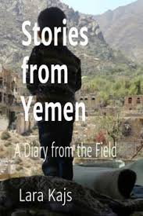

المحتوى المميز
شائع

قصر دار الحجر التاريخي
تحفة معمارية يمنية فريدة تقع في وادي ظهر، بناها الإمام يحيى في القرن العشرين على صخرة ضخمة.
1250
89
45
مشهور

صناعة الخناجر اليمنية التراثية
فن صناعة الخناجر اليمنية التقليدية والتي تعتبر رمزاً للهوية اليمنية.
890
156
78
مفضل

المندي اليمني الأصيل
طبق تراثي يمني شهير يتكون من الأرز واللحم المطبوخ بطريقة خاصة في التنور التقليدي.
675
92
134

الأزياء اليمنية التقليدية
تنوع رائع في الأزياء التراثية اليمنية التي تختلف من منطقة لأخرى.
عرض التفاصيل
543
67
29

الموسيقى اليمنية التراثية
تراث موسيقي غني يشمل الأغاني الشعبية والآلات الموسيقية التقليدية مثل العود والطبل.
789
112
65

حكايات من التراث اليمني
مجموعة من الحكايات والأساطير الشعبية التي تعكس ثقافة وتاريخ اليمن.
432
54
21

مدينة شبام حضرموت
تُعرف بأنها أقدم مدينة ناطحات سحاب في العالم، وتتميز بمبانيها الطينية الشاهقة.
987
210
150

صناعة الفضة اليمنية
تتميز صناعة الفضة في اليمن بتصاميمها الفريدة التي تعكس التراث والثقافة المحلية.
654
88
43

العسل الدوعني اليمني
يُعتبر من أجود أنواع العسل في العالم، ويتميز بفوائده الصحية العديدة.
1500
320
250
لا توجد نتائج
لم يتم العثور على عناصر تتطابق مع بحثك.